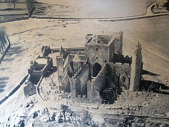
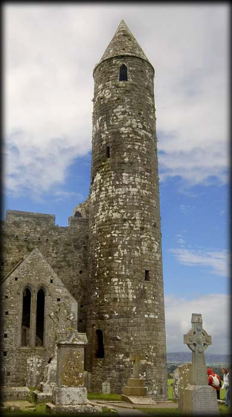
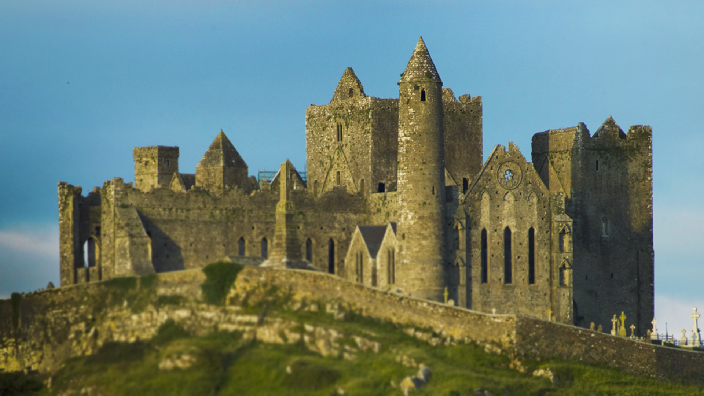
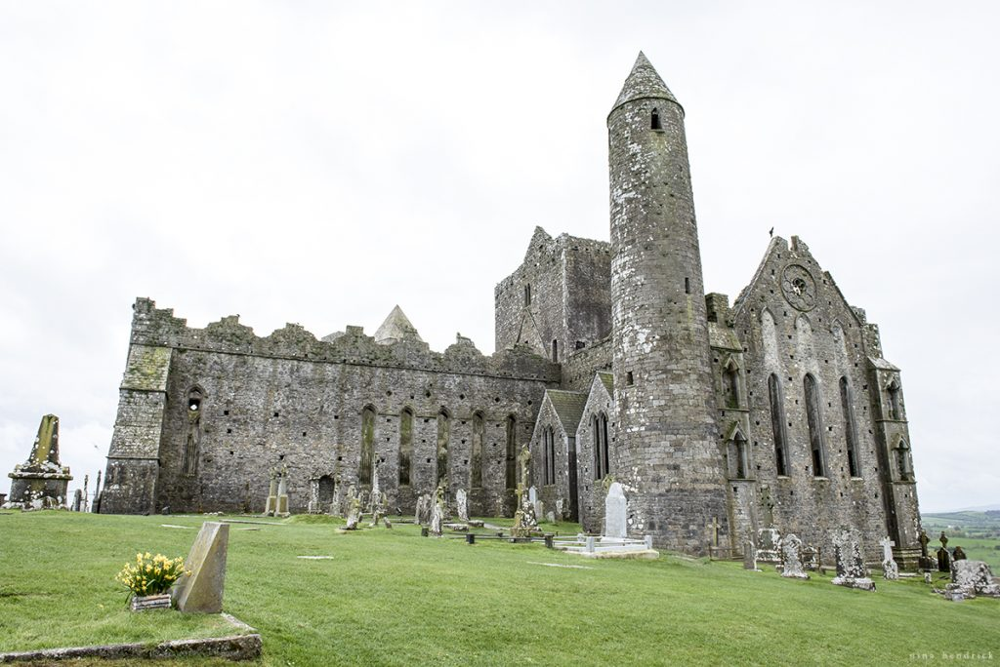

The Rock of Cashel
Origins

According to local mythology, the Rock of Cashel originated in the Devil's Bit, a mountain 20 miles (30 km) north of Cashel when St. Patrick banished Satan from a cave, resulting in the Rock's landing in Cashel. Cashel is reputed to be the site of the conversion of the King of Munster by St. Patrick in the 5th century.
The Rock of Cashel was the traditional seat of the kings of Munster for several hundred years prior to the Norman invasion. In 1101, the King of Munster, Muirchertach Ua Briain, donated his fortress on the Rock to the Church. The picturesque complex has a character of its own and is one of the most remarkable collections of Celtic art and medieval architecture to be found anywhere in Europe. Few remnants of the early structures survive; the majority of buildings on the current site date from the 12th and 13th centuries..
Cormac's Chapel,
Cormac's Chapel, the chapel of King Cormac Mac Carthaigh, was begun in 1127 and consecrated in 1134.[2] It is a sophisticated structure, with vaulted ceilings and wide arches, drawing on contemporary European architecture and infusing unique native elements. The Irish Abbot of Regensburg, Dirmicius of Regensburg, sent two of his carpenters to help in the work and the twin towers on either side of the junction of the nave and chancel are strongly suggestive of their Germanic influence, as this feature is otherwise unknown in Ireland.
Other notable features of the building include interior and exterior arcading, a barrel-vaulted roof, a carved tympanum over both doorways, the magnificent north doorway and chancel arch. It contains one of the best-preserved Irish frescoes from this time period. The Chapel was constructed primarily of sandstone which has become waterlogged over the centuries, significantly damaging the interior frescoes. Restoration and preservation required the chapel be completely enclosed in a rain-proof structure with interior dehumidifiers to dry out the stone.
The Cathedral
The largest remaining structure is St. Patrick’s Cathedral. The Cathedral, built between 1235 and 1270, is an aisle-less building of cruciform plan with a central tower. The nave was reduced in the 15th century when a five-story castle (tower-house) was added to the west end as a residence for the archbishop. The most attractive elements are the transepts (c.1270), with triple lancet windows. On the east side of the transepts are square chapels, two on each side, all with piscinae and tomb niches. The north transept and long choir each contain late medieval tombs and grave slabs. It is possible to discern the dates of decorative elements based on the material used: the original 13th-century work is in sandstone, while later work is in limestone..
More photos
